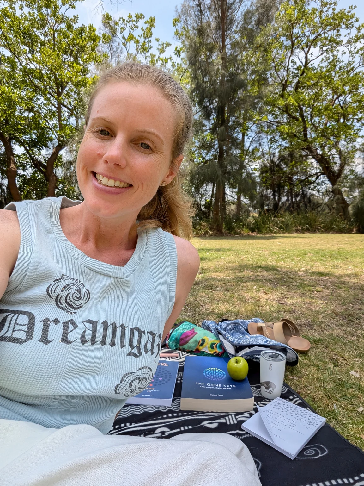
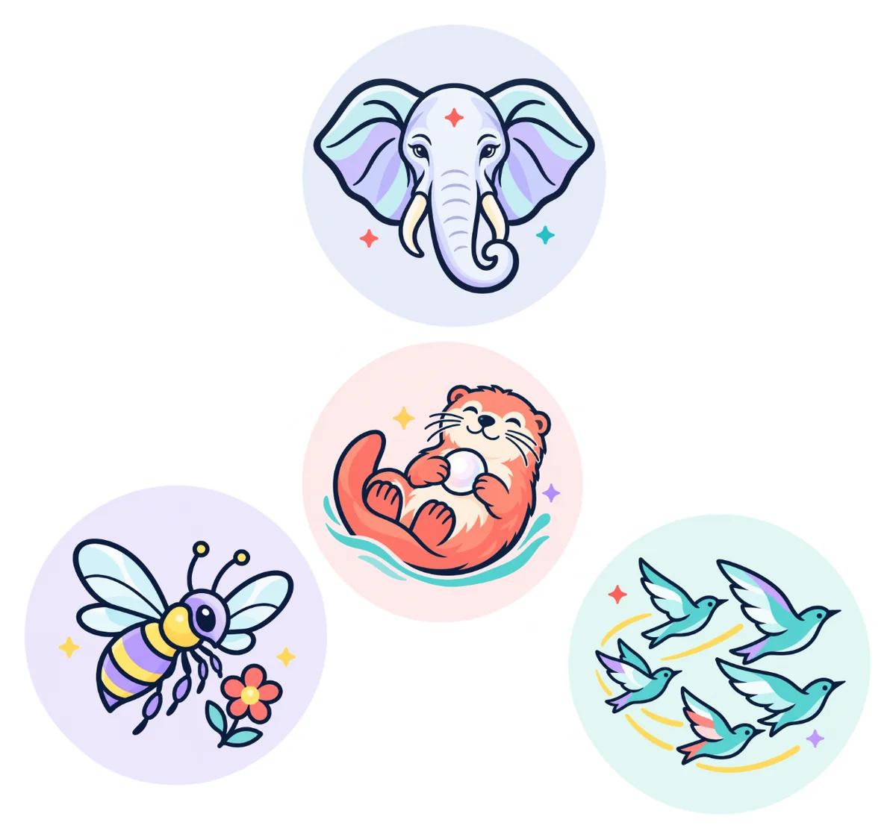
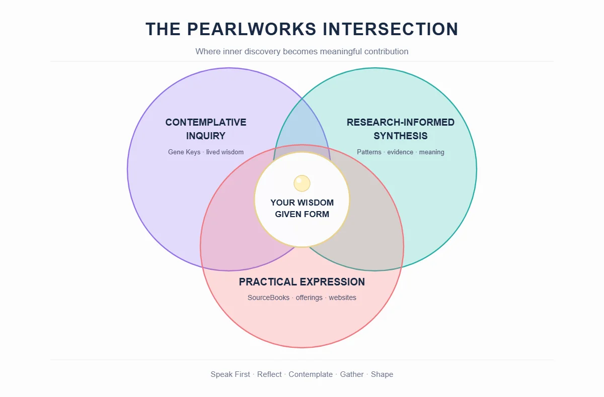

Gene Keys Guide · Perth, Western Australia
Hello, I’m Rebecca.
I love birds, long walks and conversations that help something become clearer.
My background is in biomedical research and statistics. These days, I help people bring their Pearl Sequence into the everyday work of describing what they offer, in words that sound like them.

My way into the Gene Keys
The Delta programme is a particular love of mine. I’ve taken part in four Deltas and in the Star of Consciousness. I also love having a book, a notebook and a patch of grass to myself.

-
An Audible recommendation
That’s how I first came across the Gene Keys. I’m still sitting with the questions that grew out of that first listen.
-
Gene Keys Guides Programme
I completed the Guides Programme and became a Gene Keys Guide.
View my Guide certificate -
Gene Keys Delta Guides Module
I went on to complete the Delta Guides Module.
View my Delta Guide certificate


My Pearl Sequence
These are four commitments I return to in my own work. I associate each sphere with an animal, and with a few words that help me remember what I want to practise.
-

Vocation · 14.2 Bee
Purposeful Propagation
Grow what gives life, with care and intention.
-
Culture · 51.6 Starling flock
Courageous Coherence
Initiate change while honouring the intelligence of the whole.
-
Brand · 21.1 Elephant
Sovereign Stewardship
Exercise authority through trust, dignity and responsibility.
-
Pearl · 27.3 Otter
Celebratory Circulation
Let care, resources and joy circulate to nourish everyone.
How I work
I began my research career in a DNA extraction lab and later worked as a biostatistician. I still love the moment a pattern starts to make sense. In a Pearlworks conversation, I’m listening for that in your words.
You bring the experience of your work. I bring questions, attention and help organising what emerges. A phrase you say in passing might become the opening line of your website, or a thought you’d like to keep in your Sourcebook.
Explore the wider Pearlworks vision

View full-size diagramWhat are you ready to put into words?
You can bring a question, a few scattered notes, or an offering you’re finding hard to describe. We agree the format, timing and fee before working together.